الأستاذ محمد صلاح هو أحد أشهر معلمي اللغة العربية في مصر ويحظى بشعبية كبيرة بين طلاب المرحلة الثانوية، خاصةً لأسلوبه المبتكر في التدريس عبر منصات الإنترنت وقنوات يوتيوب.
قناة اليتيوب المنصة الخاصة بالمستر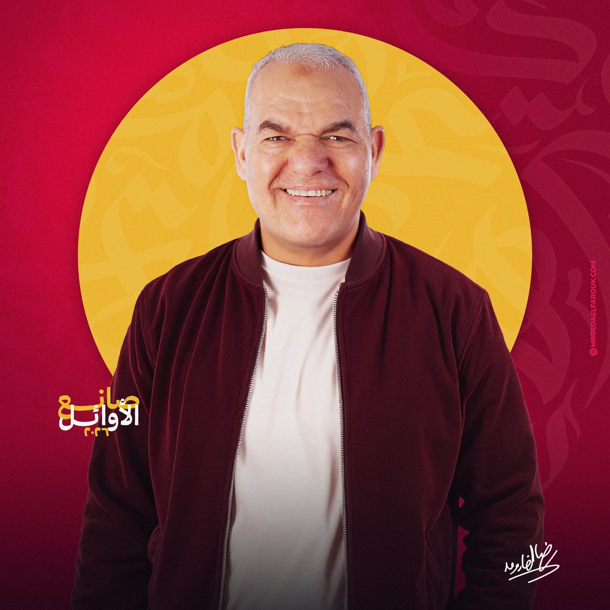
يُعرف الأستاذ رضا الفاروق بمسيرة تعليمية طويلة ومؤثرة، ويتابعه الملايين من الطلاب على منصات مختلفة.
قناة اليوتيوب المنصة الخاصة بالمستر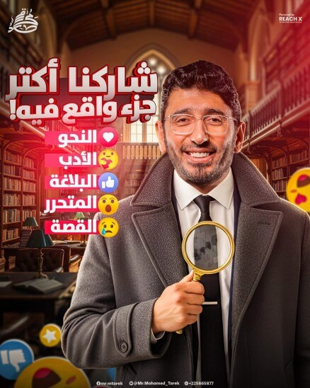
الأستاذ محمد طارق هو معلم للغة العربية متخصص في تدريس مناهج الثانوية العامة (المراحل الثلاث). قناته ومنصاته التعليمية هي مصدر أساسي للطلاب الذين يبحثون عن شروحات شاملة للمادة.
قناة اليوتيوب المنصة الخاصة بالمسترمستر وليد محسن هو أحد الأساتذة البارزين والمشهورين في تدريس مادة اللغة العربية لطلاب المرحلة الثانوية، خاصةً الصف الثالث الثانوي في مصر.
قناة اليوتيوب المنصة الخاصة بالمستر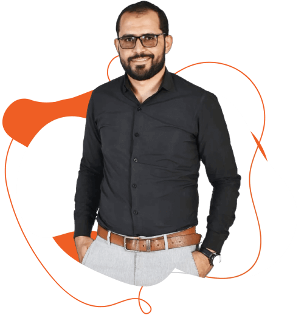
يُعرف الأستاذ الدكتور ربيع الجمهودي بأنه مُعلم ومُحاضر متخصص في تدريس مادة اللغة العربية لطلاب المراحل الثانوية (العام والأزهري).
قناة اليوتيوب المنصة الخاصة بالمستر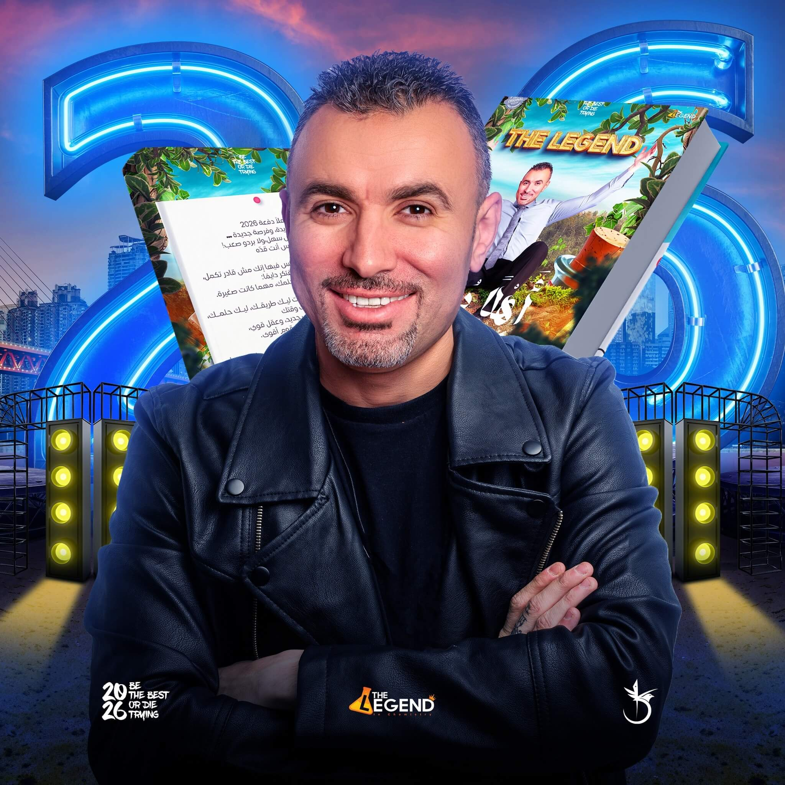
يُعد الأستاذ خالد صقر مُعلمًا ومُحاضرًا مشهورًا ومتخصصًا في تدريس مادة الكيمياء والعلوم المتكاملة للمراحل الثانوية.
قناة اليوتيوب المنصة الخاصة بالمستر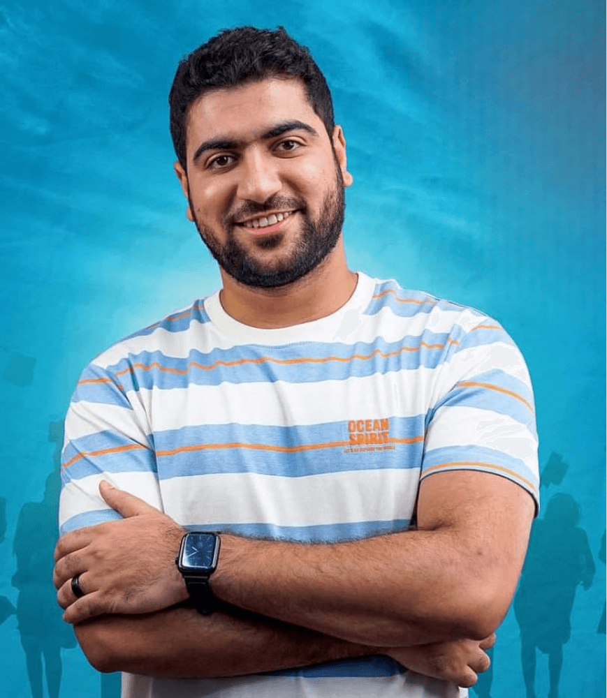
الأستاذ أحمد الجوهري هو مُعلم متخصص ومشهور في تدريس مادة الأحياء لطلاب المراحل الثانوية، وله حضور قوي على الإنترنت من خلال منصته التعليمية.
قناة اليوتيوب المنصة الخاصة بالمستر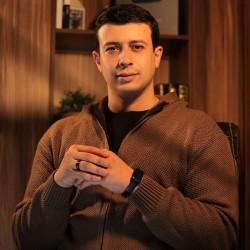
مستر حيدر محمد هو أحد الأساتذة المعروفين في تدريس مادتي الجيولوجيا و العلوم المتكاملة للمرحلة الثانوية.
قناة اليوتيوب المنصة الخاصة بالمستر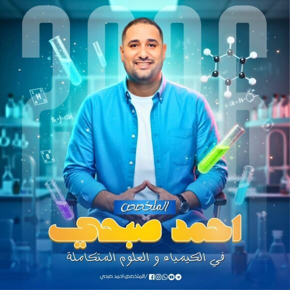
أستاذ أحمد صبحي هو معلم علوم متميز، يشتهر بأسلوبه المبسط والمحفز الذي يجعل المواد العلمية المعقدة (فيزياء، كيمياء، أحياء) سهلة وممتعة للطلاب، مع التركيز على التجارب العملية وربط العلوم بالحياة اليومية.
قناة اليوتيوب Facebook channel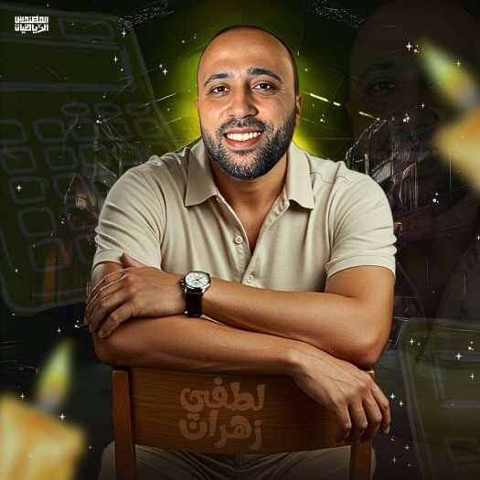
مستر لطفي زهران هو مهندس ومدرس رياضيات مشهور للمرحلة الثانوية، معروف بأسلوبه المُبسَّط والمُركَّز على التأسيس السليم في جميع فروع المادة. يقدم شرحاً شاملاً وتدريبات مكثفة عبر منصته وعبر محتوى عالي الجودة على يوتيوب.
قناة اليوتيوب المنصة الخاصة بالمستر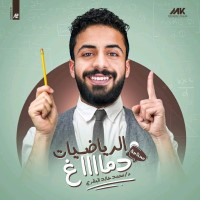
الأستاذ محمد خالد هو خبير ومتخصص في مجاله، معروف بأسلوبه التدريسي أو العملي الشامل والمحفز الذي يترك أثراً إيجابياً ملموساً. يتميز بقدرته على تبسيط المفاهيم المعقدة، مما يجعله شخصية قيادية ومُلهمة للكثيرين.
قناة اليوتيوب المنصة الخاصة بالمسترأسامة سعد هو خبير متميز وذو رؤية في مجال الرياضيات، يمتلك سجلًا حافلًا بالخبرة والمعرفة العميقة. يتميز بأسلوبه القيادي المحترف ومهاراته التواصلية الفعالة، مما يجعله شخصية مؤثرة وموثوقة.
قناة اليوتيوب المنصة الخاصة بالمسترلأستاذ عمرو رجب هو معلم لغة إنجليزية متميز، يمتلك أسلوبًا تدريسيًا فعالًا وخبرة واسعة في تبسيط القواعد والمفاهيم اللغوية. يُعرف بقدرته على إلهام الطلاب وتحسين مهاراتهم في المحادثة والكتابة، مما يجعله وجهة موثوقة للتعلم.
قناة اليوتيوب المنصة الخاصة بالمسترالأستاذ عمر أحمد عبد الفتاح هو خبير في تدريس اللغة الإنجليزية، يتمتع بأسلوب شرح شيق ومعرفة عميقة بالمناهج اللغوية الحديثة. يتميز بقدرته على تطوير مهارات الطلاب في جميع جوانب اللغة، ويُعد مصدرًا موثوقًا للإتقان اللغوي.
قناة اليوتيوب المنصة الخاصة بالمسترالأستاذ مهاب سلامة هو مؤرخ متميز، يتمتع بأسلوب سرد آسر ومعرفة معمقة بالأحداث والحضارات عبر العصور المختلفة. يتميز بقدرته على ربط الماضي بالحاضر وتحليل السياقات التاريخية بدقة، مما يجعل دروسه مصدر إلهام وفهم عميق.
قناة اليوتيوب المنصة الخاصة بالمستر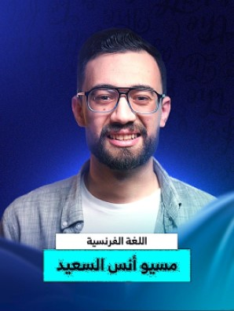
مستر أنس هو مُعلم متمرس للغة الفرنسية، يمتلك أسلوبًا شيقًا ومبسطًا يجعله قادرًا على غرس قواعد ونطق اللغة بسلاسة وفعالية في أذهان طلابه.
قناة اليوتيوب المنصة الخاصة بالمسترالمس سماح هي معلمة متميزة، تجمع بين الاحترافية في الشرح والاهتمام الشخصي بالطلاب، مما يخلق بيئة تعليمية إيجابية وفعالة. تتميز بأسلوبها الصبور والودود وقدرتها على تبسيط أصعب النقاط لضمان استيعاب الجميع وتحقيقهم لأعلى الدرجات.
قناة اليوتيوب Facebook channel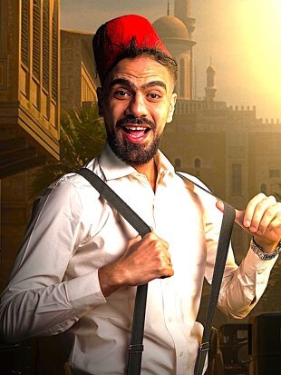
الأستاذ الجابري هو معلم مُلهِم للفلسفة، يمتلك أسلوبًا مُحفزًا للفكر النقدي ويجعل المفاهيم الفلسفية المعقدة سهلة الفهم والربط بالحياة اليومية. يتميز بقدرته على إثارة النقاشات العميقة وشغفه بمادة الفلسفة ينعكس في شرحه الواضح والمنظم.
قناة اليوتيوب المنصة الخاصة بالمستر